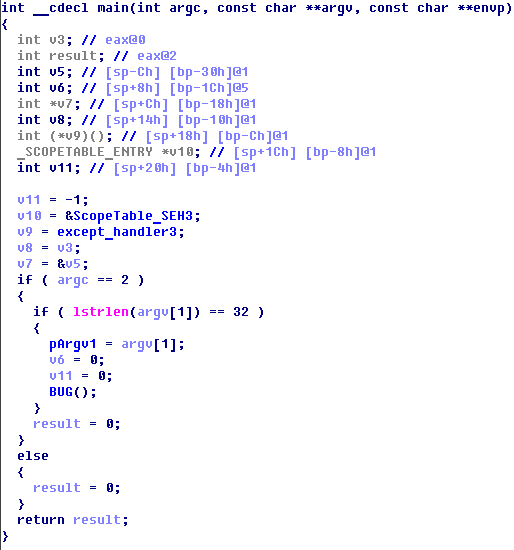

In reverse category this task was the easiest one, except Harm (reverse 10), of course:)
The task was to reverse x86 PE executable. There was 2 ways to solve this task: the easiest one and little more complicated. But let's start with their commom part.
The file seems to be packed by UPX, so start debugging! After unpacking by upx we can find that OEP is at address 0x6d28, but there is a very strange code:
And the address 0x15c3 seems to be the real OEP. So set breakpoint at address 0x4015c3 and dump image using PeTools and ImpREC (my dump avaliable here). Now just open dumped file in IDA.
The first way. If we try to decompile dumped file then we will see next:

So, the lenght of key is 32 bytes. Now let's find where does it checked:
Go to address 0x4011CD, jump little higher to address 0x4010d0 and create a function there. After decompilation of this function we can see that pArgv1 passed to function at address 0x401000, which looks like RC4. After that it compare pArgv1 with local buffer.
signed int __stdcall sub_4010D0()
{
int v0; // eax@0
char v1; // cl@1
unsigned int v2; // eax@1
signed int v3; // eax@3
int v5; // [sp+4h] [bp-44h]@1
char v6; // [sp+8h] [bp-40h]@1
char pCryptedFlag[32]; // [sp+Ch] [bp-3Ch]@1
char v8; // [sp+2Ch] [bp-1Ch]@1
char pMaskedKey[11]; // [sp+30h] [bp-18h]@1
char v10; // [sp+3Bh] [bp-Dh]@1
int v11; // [sp+3Ch] [bp-Ch]@1
int *v12; // [sp+40h] [bp-8h]@1
char xorMaskConstant; // [sp+47h] [bp-1h]@1
pCryptedFlag[22] = 69;
pCryptedFlag[26] = 69;
LOBYTE(v0) = -123;
pCryptedFlag[0] = -54;
pCryptedFlag[1] = -56;
pCryptedFlag[2] = -57;
pCryptedFlag[3] = 3;
pCryptedFlag[4] = -4;
pCryptedFlag[5] = 16;
pCryptedFlag[6] = 40;
pCryptedFlag[7] = 31;
pCryptedFlag[8] = 122;
pCryptedFlag[9] = 127;
pCryptedFlag[10] = -116;
pCryptedFlag[11] = -108;
pCryptedFlag[12] = 46;
pCryptedFlag[13] = -7;
pCryptedFlag[14] = 105;
pCryptedFlag[15] = 36;
pCryptedFlag[16] = -97;
pCryptedFlag[17] = 125;
pCryptedFlag[18] = 39;
pCryptedFlag[19] = -63;
pCryptedFlag[20] = -60;
pCryptedFlag[21] = 9;
pCryptedFlag[23] = 127;
pCryptedFlag[24] = 117;
pCryptedFlag[25] = -18;
pCryptedFlag[27] = -105;
pCryptedFlag[28] = -115;
pCryptedFlag[29] = -81;
pCryptedFlag[30] = 121;
pCryptedFlag[31] = 31;
v8 = 0;
pMaskedKey[0] = -122;
pMaskedKey[1] = -34;
pMaskedKey[2] = -102;
pMaskedKey[3] = -8;
pMaskedKey[4] = -33;
pMaskedKey[5] = -11;
pMaskedKey[6] = -123;
pMaskedKey[7] = -23;
pMaskedKey[8] = -35;
pMaskedKey[9] = -123;
pMaskedKey[10] = -17;
v10 = 0;
v11 = v0;
v12 = &v5;
xorMaskConstant = v6;
v1 = v6;
v2 = 0;
do
{
pMaskedKey[v2] ^= v1;
++v2;
}
while ( v2 < 0xB );
rc4Crypt(pMaskedKey, pArgv1);
v3 = 0;
while ( *(&pCryptedFlag[v3] + pArgv1 - pCryptedFlag) == pCryptedFlag[v3] )
{
++v3;
if ( v3 >= 32 )
return 1;
}
return 0;
}Because RC4_encrypt = RC4_decrypt we can just pass to function at address 0x401000 local buffer pCryptedFlag and recive the flag!.. But what about the encryption key? If you are using OllyDbg with Phantom plugin (or any other debugger or plugin which prevent setting flag PEB.BeingDebugged) then there is no reason to worry, the buffer will be successfully decrypted :)
Otherwise we can brute the value of xorMaskConstant (because all elements in array pMaskedKey are bigger then 128 (the higher bit is set), then the range is [128,255]). The code for brutting:
def KSA(key):
keylength = len(key)
S = range(256)
j = 0
for i in range(256):
j = (j + S[i] + key[i % keylength]) % 256
S[i], S[j] = S[j], S[i] # swap
return S
def PRGA(S):
i = 0
j = 0
while True:
i = (i + 1) % 256
j = (j + S[i]) % 256
S[i], S[j] = S[j], S[i] # swap
K = S[(S[i] + S[j]) % 256]
yield K
def RC4(key):
S = KSA(key)
return PRGA(S)
if __name__ == '__main__':
CONST = 0xB6
rc4_key_arr = [0x86, 0xDE, 154, 248, 223, 245, 133, 233, 221, 133, 239]
flag_arr = [0xCA, 0xC8, 0xC7, 3,0xFC, 0x10, 0x28, 0x1F, 0x7A, 0x7F, 0x8C, 0x94, 0x2E, 0xF9, 0x69, 0x24, 0x9F, 0x7D, 0x27, 0xC1, 0xC4, 9,0x45,0x7F, 0x75, 0xEE, 0x45, 0x97, 0x8D, 0xAF, 0x79, 0x1F]
for CONST in range(128,256):
rc4_key = [el^CONST for el in rc4_key_arr]
rc4_key_stream = RC4(rc4_key)
flag = ''.join([chr(fl_el^rc4_key_stream.next()) for fl_el in flag_arr])
if "RUCTF" in flag:
print(hex(CONST)+" : "+''.join([chr(el) for el in rc4_key]) +" : "+flag)
Anyway you recive the flag: RUCTF_408f971883ccf6180eab2b3cf5
The second way. In my opinion the only intersting task in RE, I've solved during RuCTF Quals 2014 was PIN (revese 400). So the only reason why I have written this writeup is the orgnanizer's condition for participants of RuCTF Final 2014: we should give them writeups of all tasks we have solved. To make this writeup a bit more intresting I decided to write a full control flow of this executable, so let's start.
As it's shown higher IDA's Hex-Rays failed right after comparison of the lenght of input argument with 32. Let's see asm code
As you can see this instruction has been added there by post UPX and pre OEP code. Ok, so the developer wants to generate an exception and we should search for exception header.
Because this binary requires DLL msvcr90.dll which is standart CRT (C run-time) lib from Visual C++ 2008 Redistributable package we know two facts: 1) it's most likely use SEH & CRT's _try/_catch technique and 2) this executable has been developed in VS 2008:)
As you know, in CRT_try/_catch blocks passes to CRT's SEH handlers (usually _except_handler3 or _except_handler4) as aurguments (for more information you can see Igor Skochinsky's article "Compiler Internals: Exceptions and RTTI" from RECon 2012, avliable here). At the begging of _main function we can see next:
This means that there is only one _try/_catch block in _main function. Let's go to address 0x4012ac:

Ok, we have found where does function at address 0x4010d0 (as you remember, it checks input argument) called from. Now let's take a look into this function. Because we have already discussed everything except receiving of constant xorMaskConstant only this part of this function will be examined:
According to image higher we can see that local buffer pMaskedKey xored with constant PEB.BeingDebugged, which normally equal to 1 if debugger is active and 0 otherwise. But how it has happened that it equal to 0xB6?
The answer if TLS (thread local storage) callbacks.
As you know, these functions aimed to initialization of some C++ clases and runs before execution of code at EP. And I our case everything it does is just add to PEB.BeingDebugged 0xB6.
So variable xorMaskConstant should be equal to 0xB6, RC4 excryption key is "0h,NiC3_k3Y" and the flag is RUCTF_408f971883ccf6180eab2b3cf5.
Buy Kicks | adidas sold 1 million dollars today Enflame Release Date - raw amber nmd laces